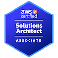
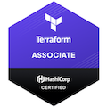
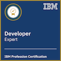
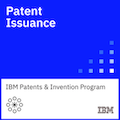
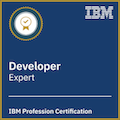
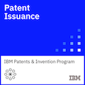

Anton Aleksandrov - whoami

- 2021-now, Principal Solutions Architect, Serverless and Event-driven architectures, AWS
- 2019-2021, Chief Architect, IBM Cloud Security Services
- 2017-2019, Chief Architect, IBM Cloud Application Identity Service
- 2012-2017, Architect, IBM Cloud MobileFirst Platform
- 2000-2012, Integrations Engineer, Software Engineer, Solutions Engineer etc etc etc


 



Talks
- NVIDIA GTC 2025 - Automated Vulnerability Patching in CI pipines for Financial Services organizations (slides)
- Serverless Office Hours - Scaling Apache Kafka Processing (video)
- What’s new in Serverless 2025 (slides)
- AWS re:Invent 2024 - Accelerate serverless deployments using Terraform with proven patterns (slides, video, resources)
- AWS re:Invent 2024 - Improve throughput and monitoring of serverless streaming workloads (slides, video, resources)
- HashiConf 2024 - Accelerate serverless deployments using HashiCorp Terraform (video, slides)
- AWS PartnerEquip 2024 - Using Lambda extensions for enhanced observability (slides)
- What’s new in Serverless 2024 (slides)
- Scaling Serverless Development with Platform Engineering (webinar, slides)
- Building serverless applications on AWS with HashiCorp Terraform (webinar)
- Serverless Office Hours - Serverless Platform Engineering (video)
- Containers from the Couch - Automate container security with Amazon Bedrock, ECR, EKS, Inspector, and Lambda (video)
- Serverless Office Hours - Building Serverless Apps with Terraform (video)
- LASCON 2024 - Applying generative AI to CVE remediation (video, slides)
- AWS re:Invent 2023 - Combining EventBridge and Step Functions - advanced usecases and best practices (slides)
- AWS re:invent 2023 - Building multi-tenant applications with Lambda and Fargate (slides)
- What’s new in Serverless 2023 (slides)
- Building multi-tenant SaaS applications with AWS Serverless (slides)
- LASCON 2023 - Reverse-engineering the Enigma Machine and rebuilding with serverless (video, slides)
- Building SaaS on AWS - Multi-tenant sharding strategies in SaaS applications (video, slides)
- AWS re:Invent 2022 - What’s possible with AWS Step Functions (slides)
- Serverless Office Hours - Building real-life asynchronous architectures (video)
- Serverless Office Hours - Multi-tenant serverless SaaS applications with AWS Serverless (video)
- LASCON 2022 - A visual journey to demystifying OAuth2 and OIDC (video, slides)
- KubeCon 2019 - Declaratively Securing Kubernetes Applications with Zero Code Updates (slides)
- LASCON 2019 - Building secure cloud apps (and sleeping well at night) (slides)
- LASCON 2018 - GDPR for Cloud Applications (slides)
- (And quite a few more in the last ~15 years…)
Publications
- Optimizing network footprint in serverless applications (blog)
- Handling billions of invocations – best practices from AWS Lambda (blog)
- From 18 Weeks to 3 Hours: How CyberArk Delivers Business Value Faster Using Serverless Technology on AWS (case study)
- Introducing cross-account targets for Amazon EventBridge Event Buses (blog)
- Automate Early Security Patching in CI Pipelines on AWS Using NVIDIA AI Blueprints (blog)
- How CyberArk is streamlining serverless governance by codifying architectural blueprints (blog)
- Efficiently processing batched data using parallelization in AWS Lambda (blog)
- Applying Generative AI to CVE remediation – early vulnerability patching in Continuous Integration Pipelines (blog)
- Building Serverless Applications with Terraform (guide)
- Introducing faster polling scale-up for AWS Lambda functions configured with Amazon SQS (blog)
- Integrating the AWS Lambda Telemetry API with Prometheus and OpenSearch (blog)
- Cost optimization for AWS Lambda (guide)
- Enhancing runtime security and governance with the AWS Lambda Runtime API proxy extension (blog)
- How SeatGeek uses AWS Serverless to control authorization, authentication, and rate-limiting in a multi-tenant SaaS application (blog)
- Implementing long-running TCP Connections within VPC networking (blog)
- Introducing the AWS Lambda Telemetry API (blog)
- Propagating valid mTLS client certificate identity to downstream services using Amazon API Gateway (blog)
- Extending your SaaS platform with AWS Lambda (blog)
- Using Istio to secure multi-cloud Kubernetes applications with zero code changes (blog)
- IBM Cloud App ID White Paper (whitepaper)
- Adding Sign In to Multicloud Applications Without Code Changes (blog)
- Add Authentication and Access Control to your Apps with IBM Cloud App ID—Video Tutorials (blog)
- Reusing Existing Red Hat SSO and Keycloak for Applications That Run on IBM Cloud with App ID (blog)
- Protecting Your Cloud Applications with App ID and Existing IBM Cloud Identity User Repository (blog)
- Serving Cached Content Using Cloud Internet Services, Cloud Object Storage and Certificate Manager (blog)
Code
- Efficiently processing batched data using parallelization in AWS Lambda (repo)
- Introducing faster polling scale-up for AWS Lambda functions configured with Amazon SQS (repo)
- Enhancing runtime security and governance with the AWS Lambda Runtime API proxy extension (repo)
- AWS Lambda Telemetry API extension, Golang (repo)
- AWS Lambda Telemetry API extension, Node.js (repo)
- AWS Lambda movie theater with response streaming (video)
- Propagating valid mTLS client certificate identity to downstream services using Amazon API Gateway (repo)
- Using data compression with AWS Lambda functions (repo)
- Jenkins plugin for AWS Lambda (repo)
- Okta Customer Identity Cloud (Auth0) JWT Validation Extension (repo)
- Lambda functions on deprecated runtimes finder (repo)
- Lambda runtimes status (updated daily)] (repo)
Oldies, but still goodies
IBM Cloud App ID video guides series
- Technologies Under the Hood (video)
- Protecting Node.js Backend Application (video)
- Protecting Node.js Web Applications (video)
- Protecting Liberty Java Web Applications (video)
- Protecting Liberty Java Backend Applications (video)
- Management API (video)
- Protecting Android Applications (video)
- Protecting iOS Applications (video)
- Protecting Spring Boot Backend Application (video)
- Protecting Spring Boot Web Applications (video)
- Using Multiple App ID Instances (video)
- Implementing the End-2-End Workflow (video)
- Introduction to Istio Service Mesh (video)
- Integrating with Keycloak (video)
- Integrating with IBM Cloud Identity (video)
- Protecting IBM Kubernetes Service OpenShift Applications (video)
- Protecting IBM Cloud Pak for Applications (video)
Patents
- Trusted Repository Review (Patent No. 12124583) (link)
- User Profile Access From Engaging Applications With Privacy Assurance Associated With An API (Patent No. 11122048) (link)
- Updating Web Resources (Patent No. 10713034, 10694353, 10212563, 10282191, 9921821, 9733919, 9690563) (link)
- Intelligent Mobile Application Update (Patent No. 9952851, 9934020) (link)
- Processing Hybrid Data Using A Single Web Client (Patent No. 9930130, 9648124, 9525587) (link)
- Integrating Remote Content with Local Content (Publication No. 20130307871) (link)